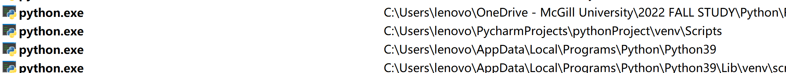
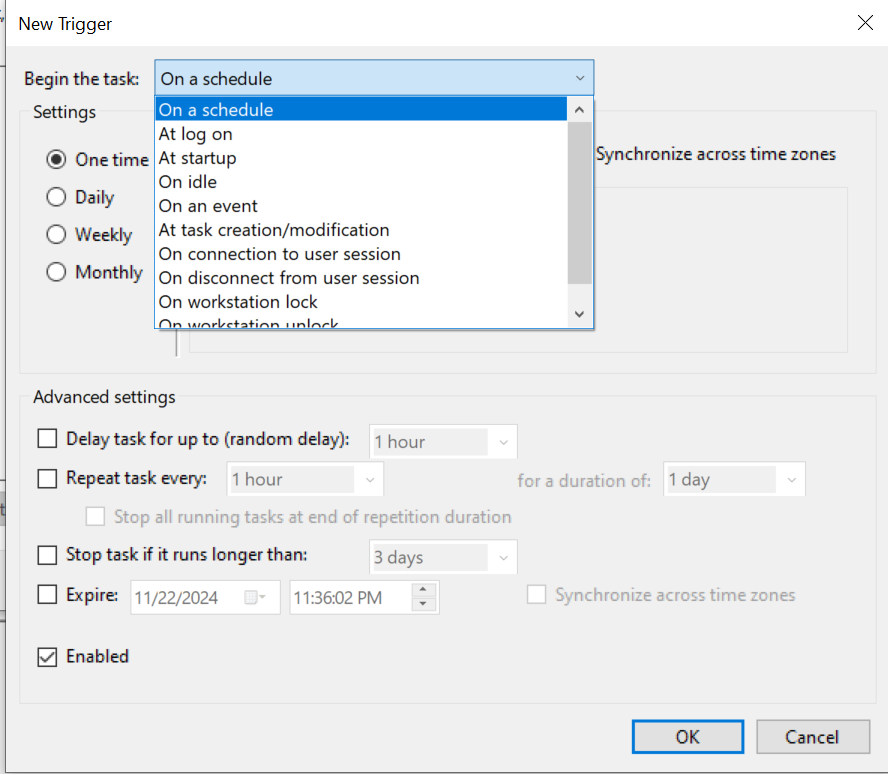
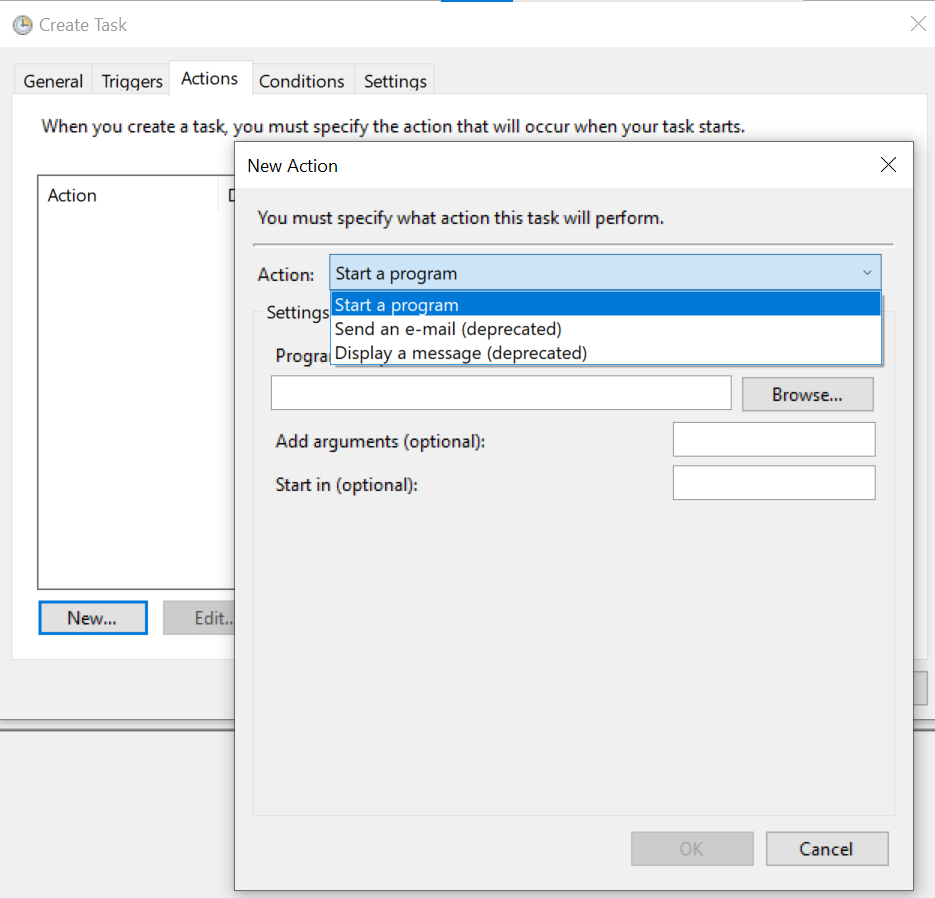
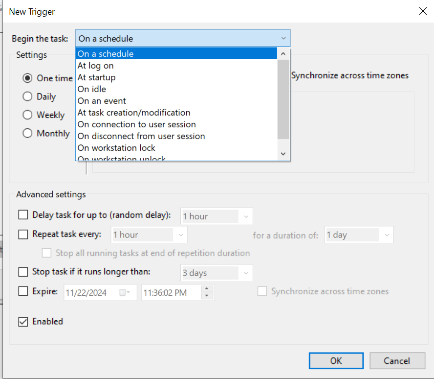
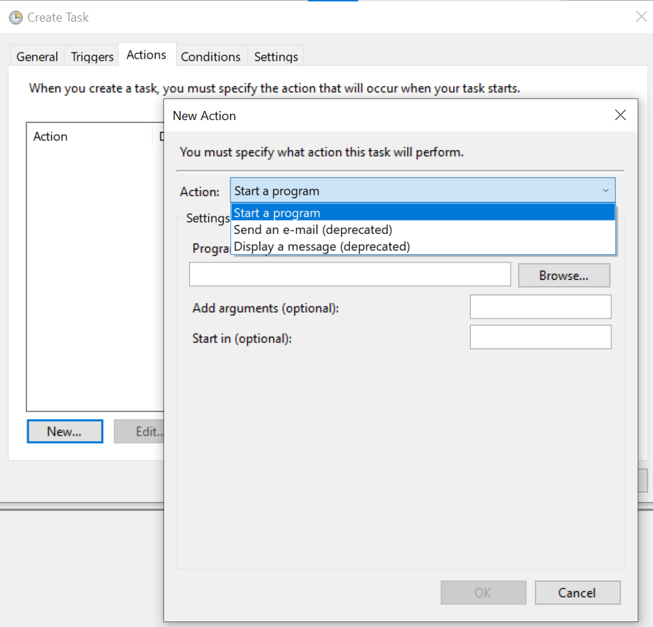

How to set a task for Automating Unit Tests in Python
For simply set up the automatic task (Running Python/C/MATLAB)We will need the following：
[Task Scheduler] => [.bat] => [Python Script]
| Item | Details | More info. |
|---|---|---|
| @1Prepare[Python script] | An executable[Pythonscript] | / |
| @2[.bat]for[python scripts] | @echo off "Path where your Python exe is stored\python.exe" "Path where your Python script is stored\script_name.py" pause @echo off "C:\Users\lenovo\AppData\Local\Programs\Python\Python39" "C:\Users\lenovo\PycharmProjects\pythonProject_HP\Python-Abaqus API Project\Python-Abaqus API\Refer_Tutorial" pause | Steps to Create a Batch File to Run a Python Script https://datatofish.com/batch-python-script/ |
| @3 Task setting for[.bat] | [Task Scheduler]: 'Create New Task' => General (task description)=> Triggers (time schedule)=> Actions (Where you put the .bat in) => Conditions => Others | From <https://www.windowscentral.com/how-create-automated-task-using-task-scheduler-windows-10> |
| @4 for[MATLAB]? | Is there a way to use a ".bat" file to call a MATLAB script from a MATLAB command line without the bat file opening up a new MATLAB session? | https://www.mathworks.com/matlabcentral/answers/115020-is-there-a-way-to-use-a-bat-file-to-call-a-matlab-script-from-a-matlab-command-line-without-the-b |
To find the right python.exe   |
|---|
| [Task Scheduler]: 'Create New Task' => General(task description)=> Triggers(time schedule)=>Actions(Where you put the .bat in) => Conditions => Others |
        |